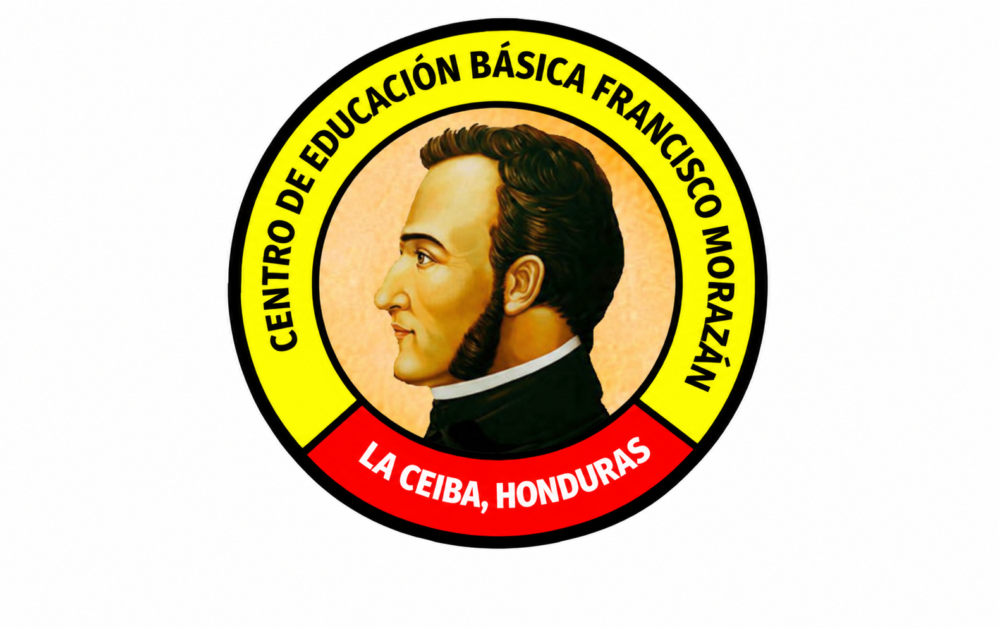
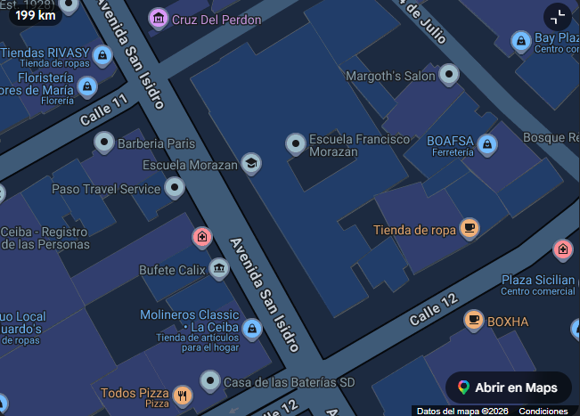

C.E.P.B. Francisco MorazánLa Ceiba, Atlántida, Honduras
Conocer nuestro centroEl Centro de Educación Pre Básica Francisco Morazán es una institución educativa ubicada en La Ceiba, Atlántida. Nuestro objetivo es brindar a los niños un espacio adecuado, cómodo y preparado para su aprendizaje y desarrollo.
Año de fundación, fundador y director actual: información por confirmar.
Información por confirmar
Información por confirmar
Información por confirmar
La Ceiba, Atlántida, Honduras
Todas las aulas están climatizadas con aires acondicionados para mayor comodidad.
Contamos con un jardín pequeño para que los niños disfruten de un espacio agradable.
Contamos con una canchita para practicar fútbol y basketball.
Tenemos baños para niñas y niños, separados y ubicados de punta a punta.
Contamos con 3 redes de WiFi gratuitas para los estudiantes.

La Ceiba, Atlántida, Honduras
🏫 Centro de Educación Pre Básica Francisco Morazán
📍 La Ceiba, Atlántida, Honduras
Teléfono y correo: información por confirmar